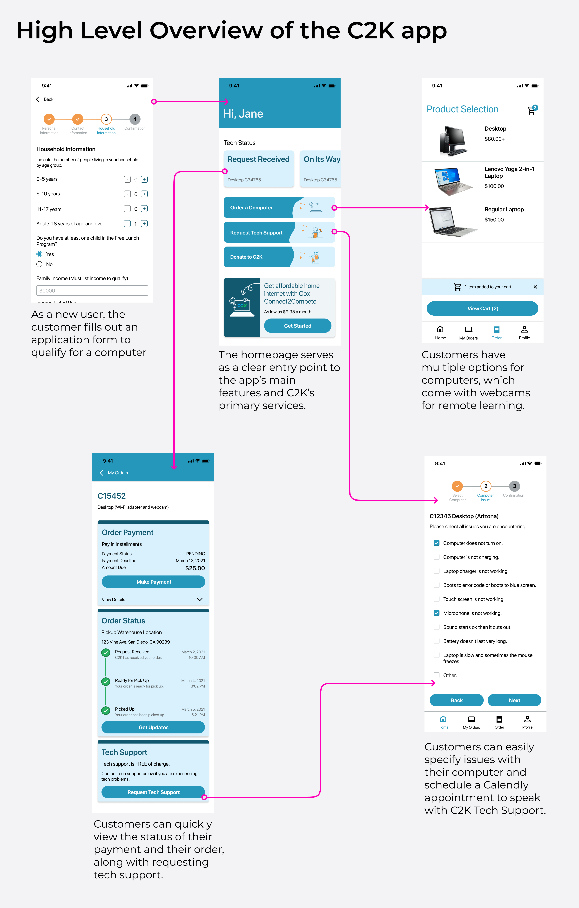
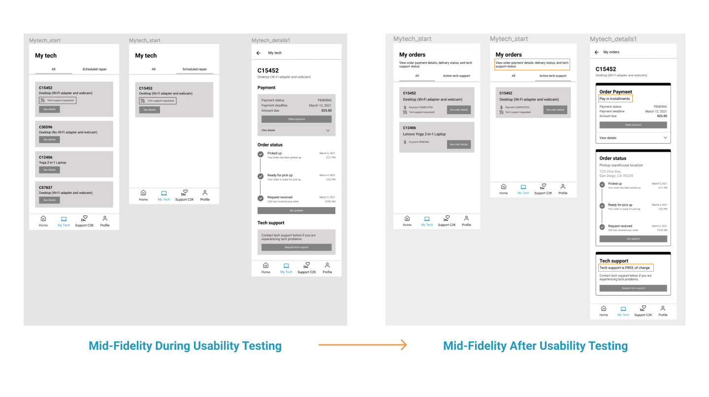
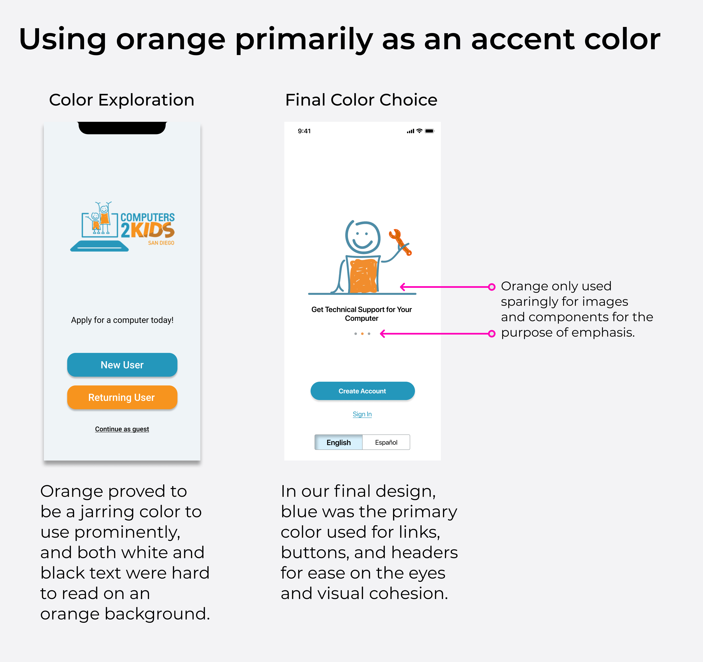
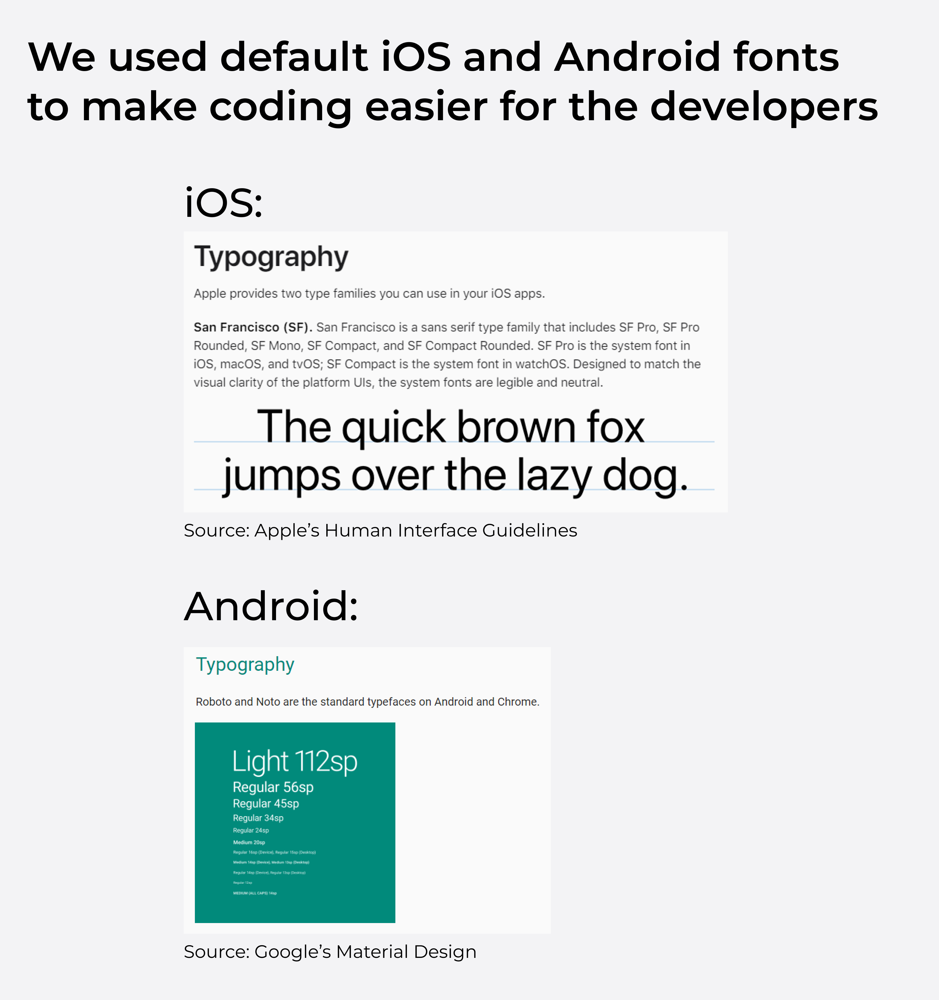
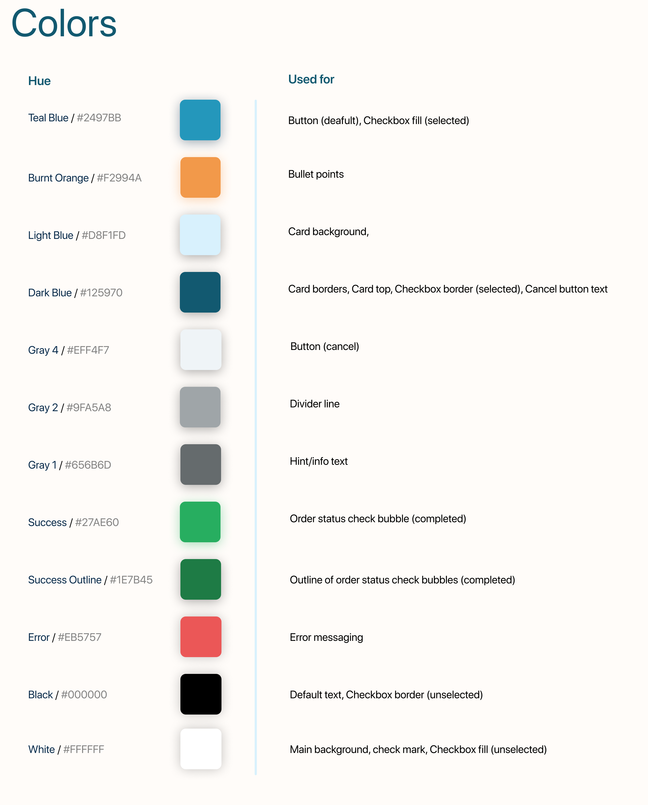
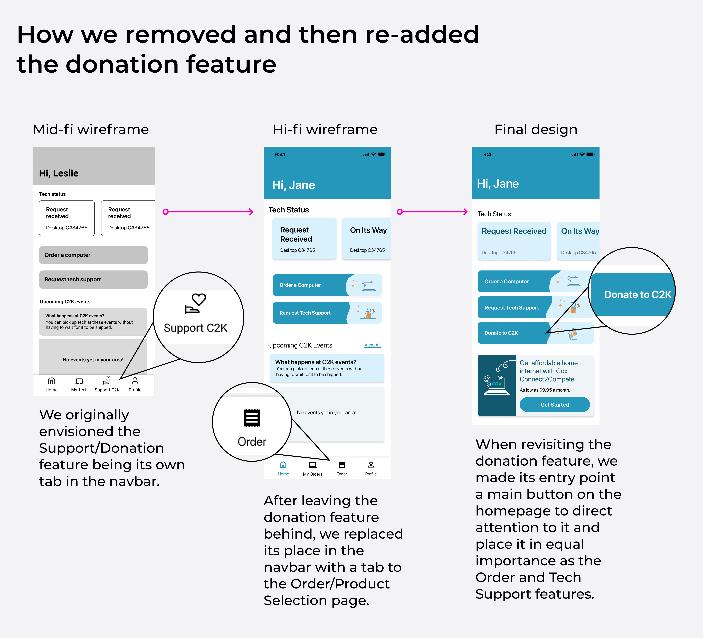

Internet access is more important than ever
We are all aware of how much more time we spent on the computer since the COVID-19 pandemic began. While a good chunk of our time was surely spent on leisure activities like gaming or watching Netflix, we also dedicated hours of our time on the computer to productive activities like attending school or getting work done. Clearly, having consistent access to a computer throughout the day is necessary for our livelihoods. Not having that access makes getting an education or earning an income significantly harder, and that is the exact challenge many low-income families face today. In 2020, 46% of adults with an income under $30,000 said they do not have access to a computer at home. This is a serious issue, and providing a way for low-income families to access the tools necessary to participate in remote work and learning is a priority.
Problem Statement
With work and school becoming increasingly reliant on technology and remote connection, low-income families are in need of easier and less costly access to computers.
Nonprofit Computers2Kids helps solve this challenge by providing discounted and refusrbished desktops and laptops to low-income families and individuals, but is lacking in its accessibility. As of right now, C2K has no dedicated way of applying for a computer on a mobile device, which is the primary way an individual would access the internet and find opportunities to solve their problem. C2K’s lack of a mobile system also hinders their ability to service new cities and regions, further limiting the scope of their mission.
The solution? A dedicated mobile app that can automate and speed up the process of applying for a computer, tracking its shipment status, and requesting tech support. That's where we come in: as part of Develop for Good, we were paired with C2K and tasked with designing and developing a full-fledged mobile app to help them further their mission.
How does our completed app work?
How did C2K operate before?
Until now, C2K has used a Google Form for families to apply for a computer through their phone.

This presents a few problems that limit the amount of families C2K can reach:
- Relies on C2K individually emailing or calling applicants with updates
- Hard for users to check the status of their application
- Users cannot easily get support on a computer C2K gave them
An app is the clear solution
Having a dedicated mobile app would allow C2K to partially automate their process, requiring less resources to service more people.
Our team and C2K leadership agreed on three main goals to accomplish through the creation of a mobile app:
- Streamline the application and client interface process
- Allow new users to apply to be a C2K client, new & existing users to request computers or tech support, and existing users to check their order statuses and adjust their information
- Achieve 20% or more existing Computers2Kids customers to use the app once it launches in the app store
Our initial ideas of the flow of the app and how we can transition smoothly from the old application.
Phrasing is key
After creating initial mid-fidelity wireframes, we sought to poke holes in our designs through usability testing. We specifically had parents test the app since parents are the main stakeholders that will be applying for a computer.
The key issues raised through testing involved confusing language that may ward off a user from using a certain feature.
Here were our main revelations:
If a service offered is free of charge, we need to clearly include text that says so.
Popups are necessary to confirm a user’s action, such as a confirmation message of a computer being added to the cart.
We updated the mid-fi wireframes based on our user testing results to serve as the backbone of the high-fidelity designs.
The UI emphasizes Branding and Adaptability
Before moving on to a hi-fidelity prototype, we needed to standardize UI elements such as colors and font. This offered a great opportunity to reinforce C2K’s established brand identity and to make coding the screens easy on the developers.

C2K’s brand colors are blue and orange, both of which symbolize education and youth. This symbolism is important when discussing an organization that provides educational tools to families, so we wanted to keep those brand colors prominent and consistent in our design. In our initial explorations, we found that heavy use of orange was aesthetically unpleasing, especially when combined with white or black text. We decided to use a teal blue as the main color, with orange being used as an accent for punctuation.
Our choice in font was made with convenience in mind. We were on a tight 10-week schedule and we wanted to minimize extra work for the developers to do. To make coding the screens as frictionless as possible, we chose default fonts: Roboto for Android and SF Pro for iOS.
C2K asked us to prominently include “Cam,” a character used in their branding. Including Cam was a balancing act, as we wanted to include Cam but also make the app look sleek and professional. Like our use of orange, we decided on using Cam as an accent.
We included Cam in the onboarding, loading, and homepage buttons.

Design is heavily reliant on developer constraints
The developer team was using React Native to build the app. While working on the hi-fi screens, we handed the updated mid-fi wireframes to them to begin building out. We mainly wanted feedback on which aspects of the designs needed to be changed before implementation so that we could incorporate those changes in the hi-fi designs.
A few of the components we designed were custom-made, and in our feedback sessions we learnt that some of these components are already built-in to React Native. We redesigned these components in our screens to be directly transferable to React Native.

As part of the process of making the development process seamless, we decided to create artifacts that would clearly lay out how we used certain UI elements. This was especially useful for colors:
Coming back to old plans
Our first round of hi-fi designs capped off the Develop for Good winter cycle and set the stage for what we would work on during the spring cycle. With the core functionality already designed, we were able to return to old ideas that C2K wanted implemented, but we couldn’t design earlier due to time constraints.
A big feature C2K wanted us to implement was a donation feature that would allow individuals to support C2K’s efforts. We originally envisioned this feature as its own dedicated page in the navbar. In our first round of hi-fi designs, we left behind that feature because we didn't have enough time, and replaced its space in the navbar with a tab to the Product Selection page where a customer can order a computer.
When revisiting how to include a donation feature, we didn't want to make its main point of entry the navbar because five tabs would look cluttered. We thought about where we could include that entry point that would motivate customers to check it out. A button on the homepage is the most clearly visible spot for it, and placing it alongside the “Order a computer” and “Request tech support” buttons gives that feature a prominence and importance that will hopefully lead to more donations.
Reflection
This was the first time I've done design work on a real product. All my previous design experience has involved creating hypothetical app prototypes for class projects, and this project was my introduction to designing a complete app that will be developed and released on the App Store. Knowing that what we were working on would be real, and used by real people, drove me to put my best effort in. The design decisions we made will affect hundreds of users, and we had to make sure every decision we made was important. Part of this experience was learning how to adapt our designs to accomodate the developers and ensure that our vision could be implemented. We had a lot of free reign to design the screens how we wanted, but we had to be cognisant of whether or not our designs could be easily implemented in the short 20-week timeframe. This was only possible through consistent back-and-forth between the designer and developer teams, and the experience as a whole has shown me how important it is for designers to converse with every other sector involved in the creation fo a product.
Knowing that our app will make families' lives better was also a big source of motivation. Computers2Kids helps hundreds of families get access to computers and helping them expand their mission adn reach more people makes me really proud of the work we did. I look forward to seeing the app go public when it is accessible on the App Store in the coming weeks.